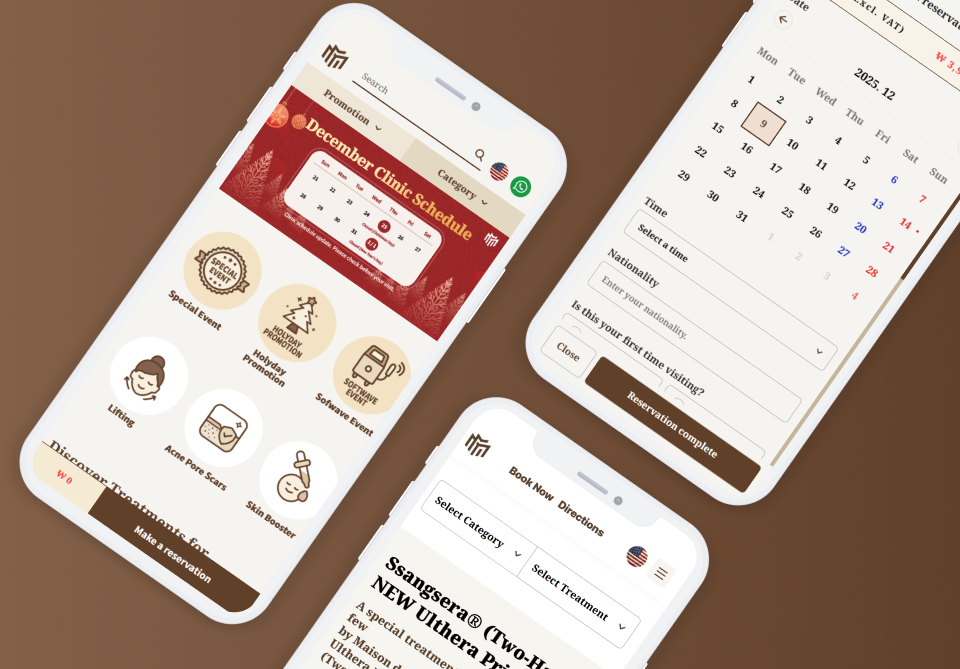

메종드엠 의원 (WEB)
(2025/06/11 ~ 2026/02/19)
글로벌 시술 예약 시스템 및 웹 콘텐츠 페이지 구축
- · 담당 업무
- 웹디자인, 퍼블리싱(반응형)
- · 참여도
- 디자인 100%, 퍼블리싱 100%
- · 기술 스택
- html, scss, css, js, Jquery
- · 디자인 툴
- Figma, Photoshop, illustrator

(2025/06/11 ~ 2026/02/19)
글로벌 시술 예약 시스템 및 웹 콘텐츠 페이지 구축
글로벌 유저 타켓의 시술 예약 시스템 및 여러 콘텐츠 페이지를 담고있는 글로벌 서비스 구축 프로젝트입니다.
사용자 페이지의 전체 UI/UX 디자인을 전담하였으며, 클라이언트 제공 리소스를 프로젝트 브랜드 이미지에 맞춰 가공 후 적용하였습니다. 아울러 예약 및 상품관리가 필요한 관리자 시스템의 디자인과 퍼블리싱을 동시에 담당했습니다.
사용자 페이지는 모바일 환경을 고려한 반응형 웹으로 제작했습니다. 특히 시술 상세 페이지는 향후 콘텐츠 변화에 유연하게 대응할 수 있도록 다양한 레이아웃을 템플릿 형태로 제작하여 확장성 높은 구조로 퍼블리싱했습니다.
또한, 검색 노출을 향상시키기 위하여 시멘틱 마크업과 META태그 기반으로 한 SEO최적화를 진행했습니다. UI인터렉션은 웹 표준을 준수하는 스크립트로 안정적으로 구현하여 개발 협업 효율을 높였습니다.